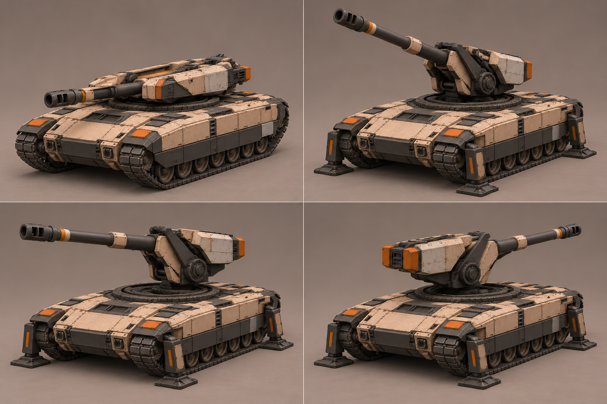
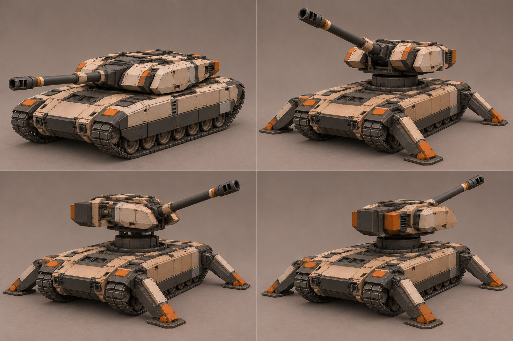

A «Погон»

Низкий открытый погон, компактная люлька и короткие вертикальные опоры. Лучше отделяется от танка в развёрнутом состоянии. На боковом кадре поворот меньше запрошенной четверти круга, угол возвышения меняется; точный вид сбоку и кинематика требуют уточнения.
C «Подъёмник»

Поднятая над палубой платформа и широкие наклонные опоры. В походном состоянии слишком близка к танку; нижние кадры не дают уверенного различия строго бокового и заднего направления. Подъёмный механизм и опоры — предложения, не утверждённая конструкция.